棋書字體與路線裝飾
下載並排圖 ↗同一個 21 步、5 分支棋譜；標題旁圖紋由實際樹產生，選中路線以重點色標示。
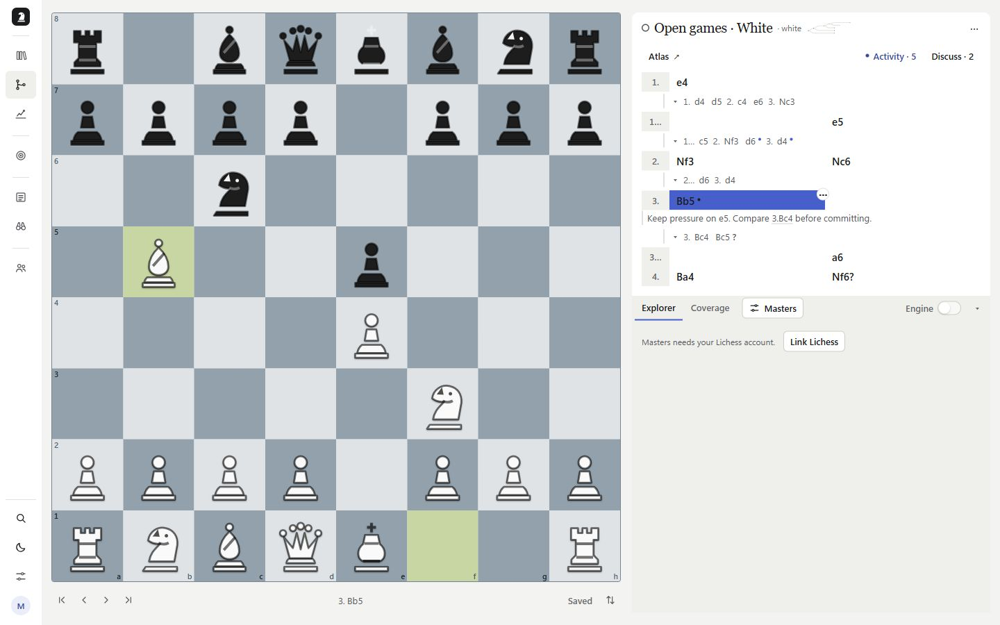
Skeleton 對齊實際棋譜
下載並排圖 ↗同樣從 Library 開啟棋譜並暫停真實 load 回應。新版共用棋步號、白方、黑方欄位；不顯示舊分岔或聚焦標題。
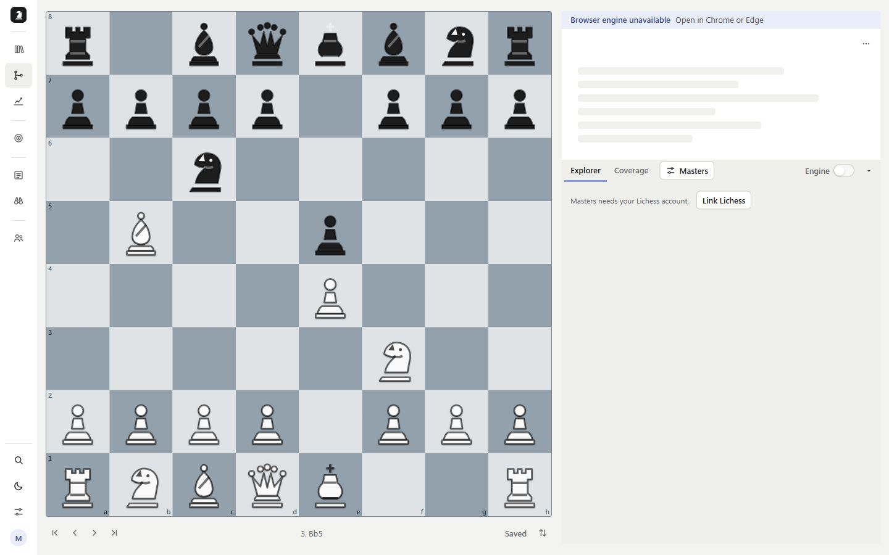
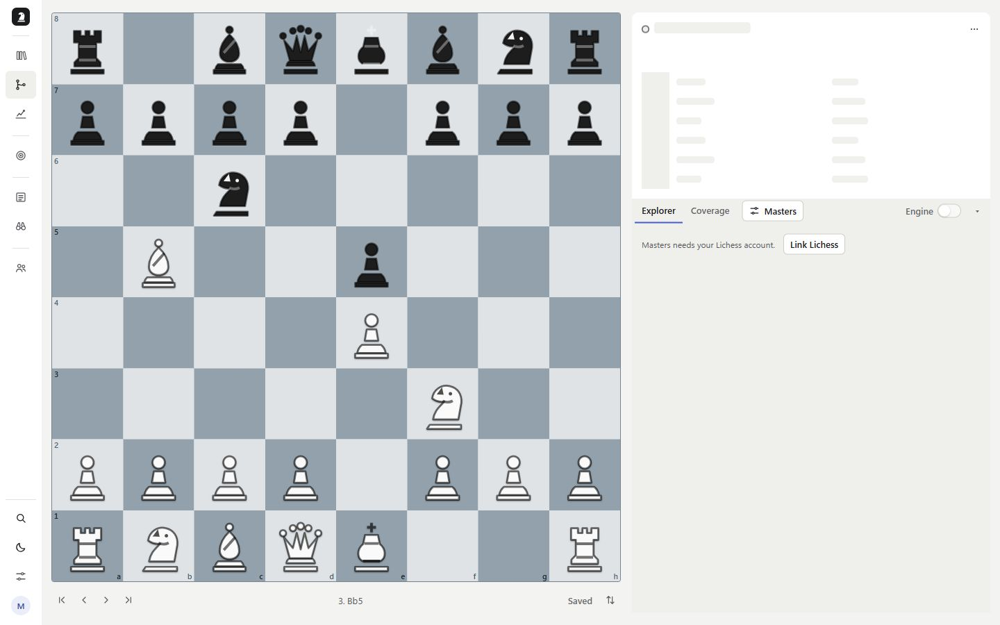
修改者、未讀與活動列表
下載並排圖 ↗舊版沒有 Activity 入口。新版以現有同步記錄列出作者、時間、影響範圍、討論和可還原操作。
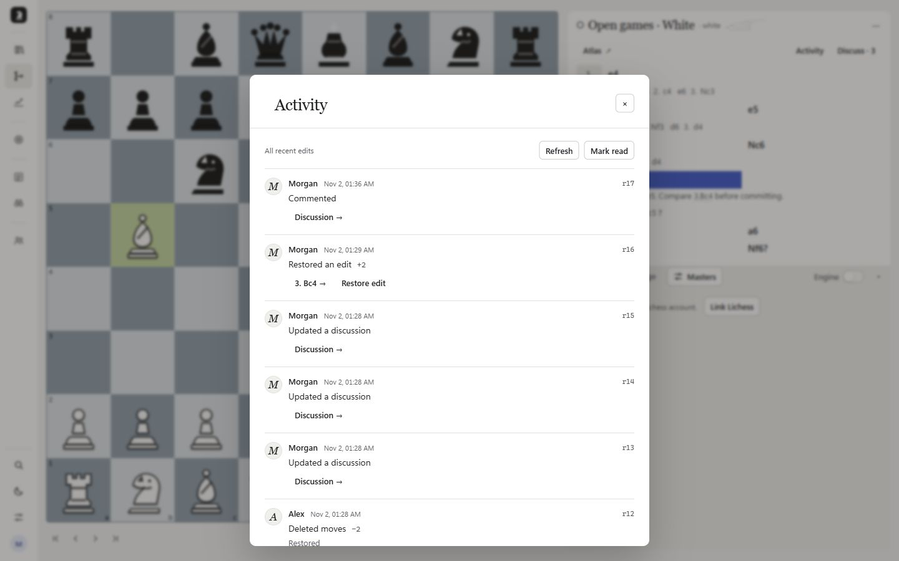
活動跳到棋步
下載並排圖 ↗從 Alex 新增兩步的事件跳到 Sicilian 的 2…d6。
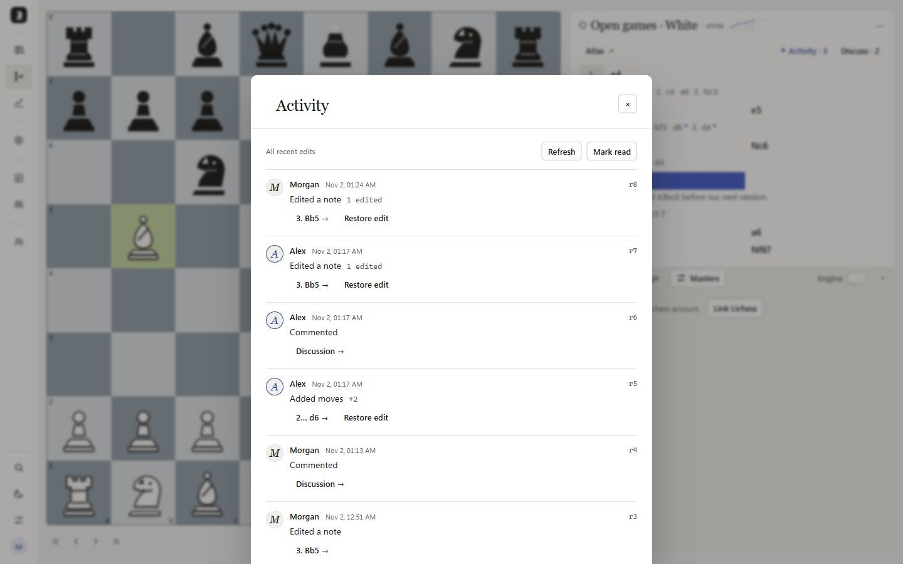
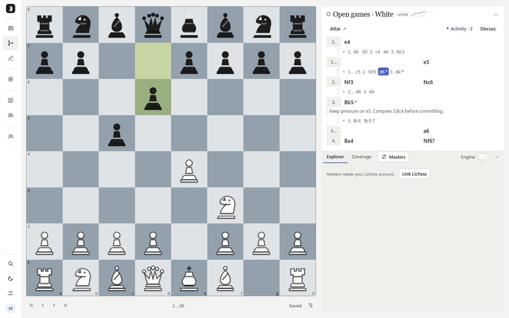
Mark read 清除未讀
下載並排圖 ↗同一棋譜：確認未讀操作後，工具列數字與棋步小點一起清除。
還原衝突保護
下載並排圖 ↗r7 的筆記被 r8 改過，還原 r7 回傳 409，保留後來的內容。
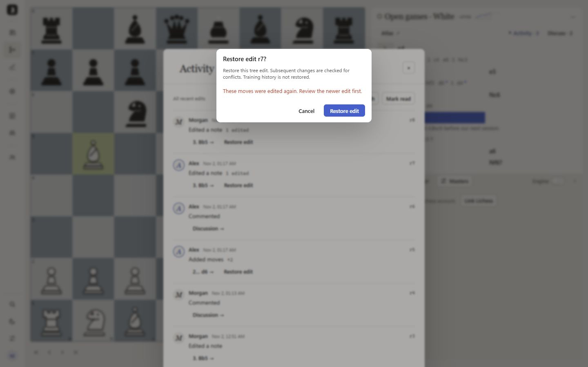
擁有者還原編輯
下載並排圖 ↗先還原 r8，再還原 r7；Activity 標記原操作已還原，並記錄兩筆逆向操作。
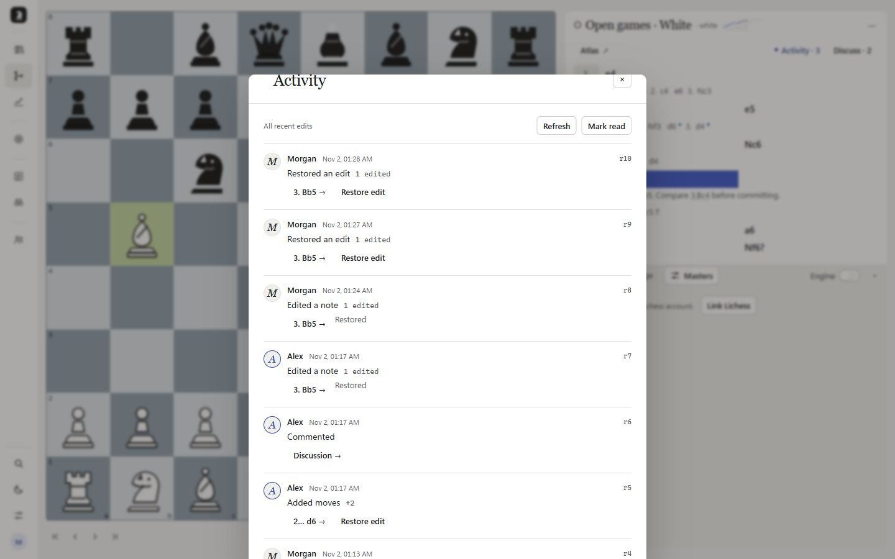
錨在局面的討論
下載並排圖 ↗舊版只有個人註解。新版 Bb5 討論顯示原局面、成員留言、回覆與解決操作。

刪線後保留討論、重新掛接
下載並排圖 ↗刪除 Bc4 分支後保留原棋盤與 Alex 留言；選取 Nc6 後 Attach here，討論移到替代局面。
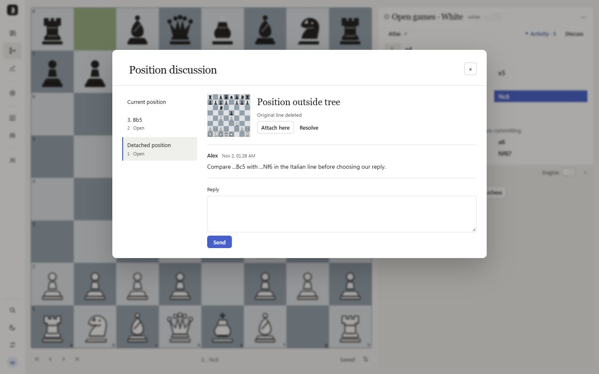
討論解決與重開
下載並排圖 ↗Resolve 更新列表狀態並出現 Reopen；已實際再按 Reopen 驗證。
還原被刪的分支
下載並排圖 ↗刪線狀態 → 擁有者還原 r12，Bc4、Bc5 回到樹上。此操作不重建訓練紀錄。
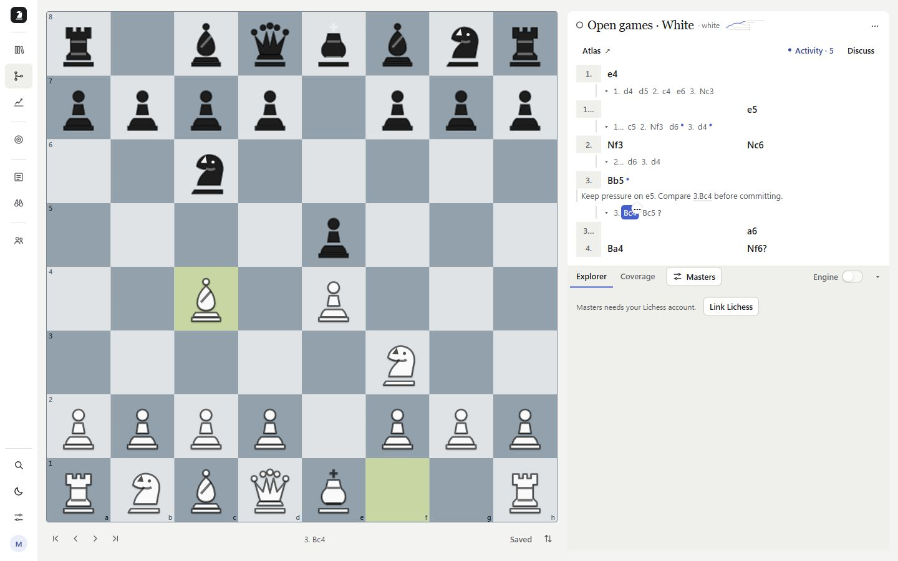
Atlas：整體路線
下載並排圖 ↗舊版只能看完整棋步樹；新版依真實根分支顯示路線圖、步數、線數和待複習數（有時才出現）。
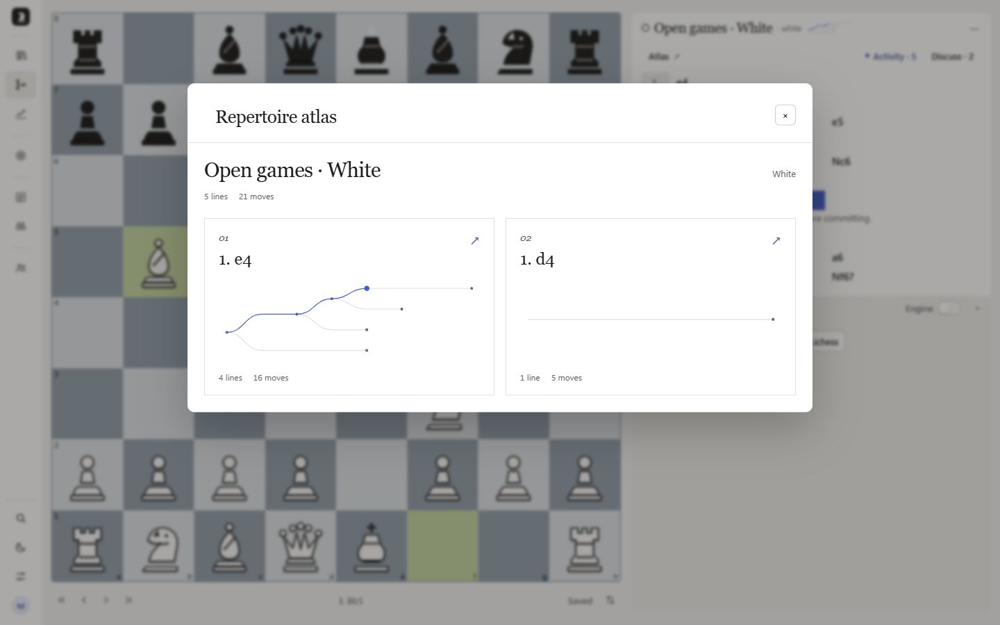
Atlas：分岔局面
下載並排圖 ↗點 e4 家族後只看真正分岔點的棋盤；強制連續序列略過。回應棋步與 Moves 都能進入棋譜。
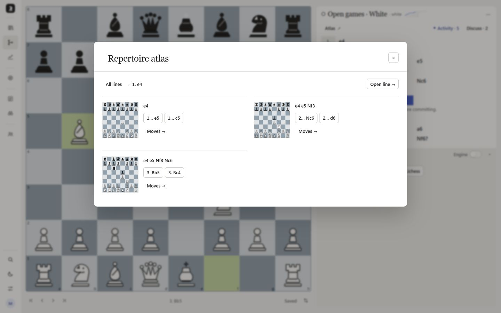
Atlas：局部棋譜
下載並排圖 ↗進入 Bb5 子樹，保留起點註解；All lines 回到全樹，導航到外部棋步也會退出聚焦。
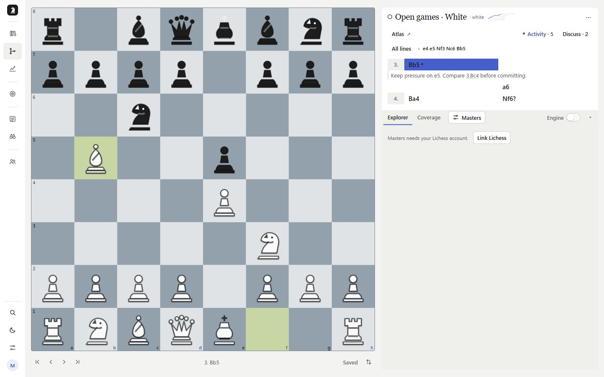
筆記儲存失敗保留輸入
下載並排圖 ↗兩版暫時令同一真實 API 回傳 503。舊版關閉表單而遺失草稿；新版留在原處並顯示錯誤，已釋放故障後成功重試。
改名失敗保留輸入
下載並排圖 ↗舊版關閉改名表單；新版保留名稱與 Save。Library 和 Build 共用同一個改名表單實作。
手機棋譜與常駐工具列
下載並排圖 ↗同一棋譜與 Bb5，390 × 844。選到後方棋步後，Atlas／Activity／Discuss 留在分頁列下方；無水平溢出。
手機開局圖譜與分岔
下載並排圖 ↗手機單欄總覽 → e4 分岔棋盤，所有分岔都能導航，沒有截斷固定張數。
手機局面討論
下載並排圖 ↗手機的局面、訊息與回覆可同時讀取；討論索引橫向捲動。
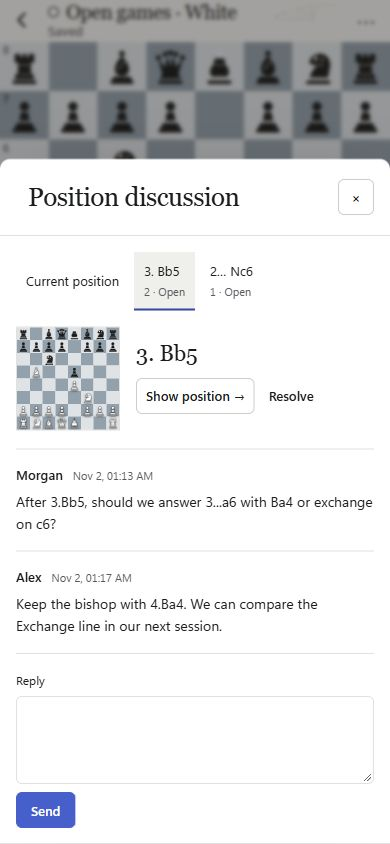
深色模式
下載並排圖 ↗使用現有主題按鈕切換；圖紋、文字、分隔線和互動色採用產品 tokens。
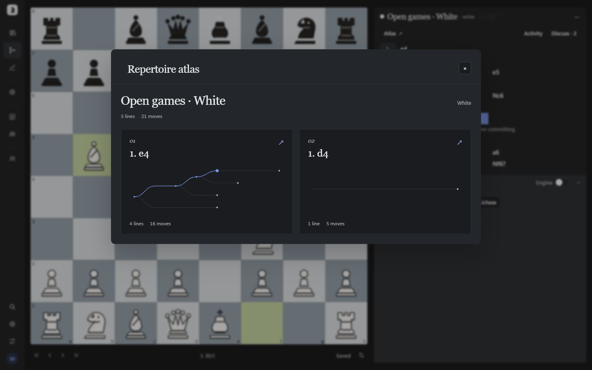
留言已送出但讀取失敗
下載並排圖 ↗只讓 GET 討論讀取回傳 503，POST 成功。按鈕改成 Refresh，不會再送出原訊息；解除故障後只有一則相同留言。左圖錯誤詳情由本地故障注入提供。
長活動列表的捲動
下載並排圖 ↗增加測試操作後的長列表：對話框底部在 876px（900px 視窗內）；只有列表捲動，標題與關閉鈕保持可見。